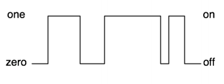

Arduino
- Microcontrolador: ATmega328
- Tensão de operação: 5V
- Tensão de input: 7-12V
(limite: 6-20V) -
Inputs/Outputs digitais: 14
(pins 0-13) -
Inputs analógicos: 6
(pins 0-5) -
Outputs analógicos: 6 (PWM)
(pins 3, 5, 6, 9, 10 e 11)

Relaciona as três grandezas fundamentais da electricidade:
Potência eléctrica: P = V * I (Watt)
Qual é o pólo negativo?
| Cor | Valor |
| Preto | 0 |
| Castanho | 1 |
| Vermelho | 2 |
| Laranja | 3 |
| Amarelo | 4 |
| Verde | 5 |
| Azul | 6 |
| Violeta | 7 |
| Cinzento | 8 |
| Branco | 9 |
| Prateado | 10% |
| Dourado | 5% |
Qual é o valor da resistência?
Castanho | Preto | Laranja | Dourado
10.000 Ohms (5% variação) => 10K Ohms
// Declaração de bibliotecas
#include "Client.h"
// Declaração de variáveis globais
int i = 0;
void setup()
{
// ...
}
void loop()
{
// ...
}
Qual deverá ser o valor da resistência?
Atenção que nem todos os LEDs têm a mesma voltagem:
int LED = 9;
void setup()
{
pinMode(LED, OUTPUT);
}
void loop()
{
digitalWrite(LED, HIGH);
delay(1000);
digitalWrite(LED, LOW);
delay(1000);
}
Os sensores e actuadores podem ser digitais ou analógicos
Digital – ON/OFF, HIGH/LOW, 5V/0V
...ou vice-versa
const int buttonPin = 7;
const int ledPin = 9;
int buttonState = 0;
void setup() {
pinMode(ledPin, OUTPUT);
pinMode(buttonPin, INPUT);
}
void loop(){
buttonState = digitalRead(buttonPin);
if (buttonState == HIGH) {
digitalWrite(ledPin, HIGH);
}
else {
digitalWrite(ledPin, LOW);
}
}
O que acontecerá se trocarmos a resistência para o pólo positivo? Lógica invertida
E se quisermos variar automaticamente a intensidade de luz de um LED?
Usamos um pin PWM
PWM - técnica para conversão digital/analógico usando apenas um bit, onde é gerada uma forma de onda quadrada onde o tempo em que esta forma fica em HIGH (5V) define o valor da saída

Qual é o pólo negativo?
A perna maior
int leds[] = {11, 10, 9};
void setup() {
for(int i = 0; i < 3; i++) {
pinMode(leds[i], OUTPUT);
}
}
void loop() {
for(int i = 0; i < 3; i++) {
for(int j = 0; j < 256; j++) {
analogWrite(leds[i], j);
delay(10);
}
digitalWrite(leds[i], LOW);
}
}
E se quisermos controlar a intensidade de luz de um LED?
Usamos um pin ADC
Mas o input varia entre 0-1023 e o output entre 0-255...
map(value, fromLow, fromHigh, toLow, toHigh)
int sensorPin = 0;
int ledPin = 9;
int sensorValue = 0;
int valMap = 0;
void setup() {
pinMode(ledPin, OUTPUT);
}
void loop() {
sensorValue = analogRead(sensorPin); // 0-1023
valMap = map(sensorValue, 0, 1023, 0, 255);
analogWrite(ledPin, valMap);
}
int LED = 9;
int val = 123;
void setup() {
pinMode(LED, OUTPUT);
Serial.begin(9600);
}
void loop() {
Serial.print(val); // envia ASCII "123"
Serial.print(val, DEC); // igual ao de cima
Serial.print(val, HEX); // envia ASCII hexadécimal "7B"
Serial.print(val, BIN); // envia ASCII binário "01111011"
Serial.print(val, BYTE); // envia 1 byte
digitalWrite(LED, HIGH);
delay(1000);
digitalWrite(LED, LOW);
delay(1000);
}
int LED = 9;
int val = 0;
void setup() {
pinMode(LED, OUTPUT);
Serial.begin(9600);
}
void loop() {
val = Serial.read();
if(val != -1) {
if(val == 'H') {
digitalWrite(LED, HIGH);
delay(1000);
digitalWrite(LED, LOW);
delay(1000);
}
}
}
O que é suposto acontecer?
Quanto menos luz houver maior luminosidade terá o LED
Usar o Serial Monitor para identificar qual o intervalo de valores de actuação do LDR
int ledPin = 9;
int sensorPin = 0;
int sensorValue = 0;
int valMap = 0;
void setup() {
pinMode(ledPin, OUTPUT);
}
void loop() {
sensorValue = analogRead(sensorPin);
valMap = map(sensorValue, 200, 600, 255, 0);
analogWrite(ledPin, valMap);
}
int sensorPin = 0;
int sensorValue = 0;
int PIEZO = 8;
int valMap = 0;
void setup() {
Serial.begin(9600);
}
void loop() {
sensorValueR = analogRead(sensorPin);
valMap = map(sensorValue, 400, 1000, 30, 1000);
Serial.println(valMap);
tone(PIEZO, valMap, 1000);
}
#include "pitches.h"
int melody[] = {NOTE_C4, NOTE_G3, NOTE_G3, NOTE_A3, NOTE_G3, 0, NOTE_B3, NOTE_C4};
// note durations: 4 = quarter note, 8 = eighth note, etc.:
int noteDurations[] = { 4, 8, 8, 4, 4, 4, 4, 4 };
void setup() {
for (int thisNote = 0; thisNote < 8; thisNote++) {
// to calculate the note duration, take one second
// divided by the note type.
// e.g. quarter note = 1000 / 4, eighth note = 1000/8, etc.
int noteDuration = 1000/noteDurations[thisNote];
tone(8, melody[thisNote],noteDuration);
int pauseBetweenNotes = noteDuration * 1.30;
delay(pauseBetweenNotes);
noTone(8);
}
}
void loop() {
}
A engenharia clássica utiliza um processo estrito para ir de A a B, enquanto o método Arduino se baseia em perdermo-nos pelo caminho e encontrarmos C.
Massimo Banzi